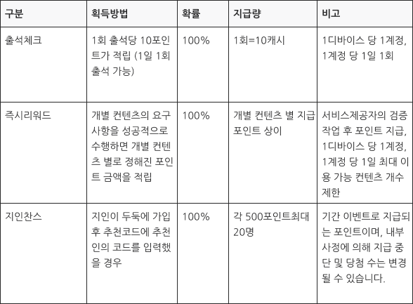
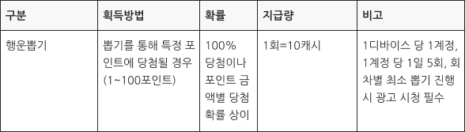

이용약관
제1조 (목적)
이 약관은 주식회사 스탠다드메이커스(이하 “회사”)가 제공하는 두둑 및 관련 서비스를 이용함에 있어 회사와 회원 간의 권리, 의무 및 책임사항과 절차 등을 정하기 위해 만들어졌습니다.
제2조 (정의)
이 약관에서는 용어를 다음과 같이 정의하여 사용합니다.
1. “서비스”란 회원의 단말기(모바일, 태블릿PC 등 각종 유무선 장치를 포함)를 통하여 회사가 제공하는 두둑 및 관련 서비스 일체를 말합니다.
2. “회원”이란 서비스에 접속하여 이 약관에 따라 회사와 이용계약을 체결함으로써 서비스를 이용하는 고객 여러분을 말합니다.
3. “아이디”란 회원의 식별과 서비스 제공을 위하여 회원이 정하고 회사가 승인한 문자와 숫자의 조합입니다.
4. “포인트”란 제12조에 따라 회원이 일정한 행위를 마친 때에 시스템에 적립되는 서비스 상의 데이터입니다.
5. “제휴컨텐츠”란 회사가 외부 업체와의 제휴를 통하여 회원에게 제공하는 유 무상의 컨텐츠를 말합니다.
제3조 (약관의 게시와 개정)
1. 이 약관은 회원이 쉽게 알 수 있도록 웹사이트 및 어플리케이션의 별도의 지정된 공간에 게시합니다.
2. 회사는 필요에 따라 “약관의 규제에 관한 법률”, “정보통신망 이용촉진 및 정보 보호 등에 관한 법률” 등 관련 법령을 위반하지 않는 범위 내에서 이 약관을 개정할 수 있습니다.
3. 회사가 약관을 개정하는 경우 적용일자 및 개정사항을 명시하여 적용일 14일 전에 웹사이트 혹은 어플리케이션 또는 이메일을 통해 공지합니다.
4. 공지일로부터 14일 이내에 회원이 명시적으로 거부하지 않는 경우 개정 약관에 동의하신 것으로 봅니다.
5. 회원이 개정에 동의하지 않는다는 의사를 표시한 경우 회사는 개정된 약관을 적용할 수 없으며, 회원은 개정 약관의 효력 발생일부터 서비스를 이용하실 수 없습니다.
제4조 (약관의 해석)
1. 이 약관에서 정하지 않은 사항이나 해석에 대하여는 관련법령 또는 상관례에 따릅니다.
2. 회사는 두둑 내부의 개별 서비스에 대해 별도의 이용약관 또는 정책(이하 “별도약관”)을 둘 수 있으며, 그 내용이 이 약관과 충돌하는 경우 별도의 약관이 우선하여 적용됩니다.
제5조 (이용계약의 체결)
1. 서비스 이용계약은 회원이 되고자 하는 사람(이하 “가입신청자”)이 약관에 동의하고 가입을 신청한 다음 회사가 이를 수락함으로써 체결됩니다. 회원은 회사가 제공하는 본인확인 기관을 통한 실명확인 및 본인인증 절차를 완료한 후, ‘회사’가 제공하는 두둑 및 관련 서비스를 이용할 수 있습니다.
2. 실명확인 및 본인인증 절차를 완료하지 못한 회원은 두둑 및 관련 서비스를 이용할 수 없으며, 기술적인 오류로 인하여 실명확인 및 본인인증 절차를 거치지 않고 두둑 및 관련 서비스를 이용하더라도 회사는 회원이 이용한 모든 서비스의 내역을 회원에게 사전 고지 없이 취소하거나 삭제할 수 있습니다.
3. 가입신청자는 가입신청 시 진실한 정보를 기재하여야 하며, 허위의 정보를 기재함으로 인한 불이익 및 법적 책임은 가입신청자에게 있습니다.
4. 만 14세 미만은 회원이 될 수 없습니다.
5. 실명확인 및 본인인증이 완료된 회원의 명의로 1개의 아이디만 가입할 수 있습니다.
6. 타인의 명의를 무단으로 도용하여 회원으로 가입하고 두둑 및 관련 서비스를 이용하는 경우 사전 고지없이 해당 회원의 이용 계약이 취소될 수 있으며 해당 회원의 포인트는 사전 고지없이 자동 소멸됩니다.
7. 가입신청자가 이전에 회원자격을 상실한 적이 있는 경우, 허위의 명의 또는 타인의 명의를 이용한 경우, 기타 승낙이 불가능한 사유가 있는 경우 승낙이 거부될 수 있습니다.
8. 회사는 서비스 관련설비의 여유 기타 기술상 또는 업무상의 이유로 승낙을 유보할 수 있으며, 그 결과를 가입신청자에게 알려드립니다.
제6조 (회원정보의 변경)
1. 회원은 서비스 내 마이페이지 화면을 통하여 본인의 개인정보를 열람하고 수정할 수 있습니다. 단, 서비스 관리를 위하여 ID, 이메일 주소, 성별은 수정할 수 없습니다.
2. 가입신청시에 기재한 회원정보에 변동이 생긴 경우 이를 수정하거나 회사에 통지하여야 하며 미수정 또는 통지하지 않음으로 인한 불이익에 대하여 회사는 책임지지 않습니다.
제7조 (서비스 내용)
1. 두둑은 두둑 어플리케이션에서 다양한 방식의 광고 컨텐츠의 클릭, 시청, 구입, 공유, 소비 등의 상호작용을 통해 포인트를 쌓고 혜택을 얻을 수 있는 리워드 어플리케이션입니다.
① 회사가 회원에게 제공하는 두둑 서비스의 기본 내용은 다음과 같습니다.
i. 광고의 송출 : 광고 이미지, 광고 동영상, 텍스트, 음향, 링크등의 제공
ii. 포인트 적립 : 약관 제12조의 행위를 완료한 회원에 대한 포인트 적립
iii. 제휴컨텐츠 이용 : 회사의 외부 제휴사가 제공하는 컨텐츠를 이용, 구매 가능
iv. 이벤트 등 회사가 개발하거나 다른 회사와의 제휴를 통해 회원에게 제공하는 기타의 서비스
② 회사는 서비스 웹사이트 및 어플리케이션을 운영하며, 회원은 보다 상세한 서비스 내용을 문의할 수 있습니다.
③ 회사는 타겟팅 광고서비스 특성상 광고주의 요구에 따라, 또는 관련법규 준수를 위하여 일부 서비스를 이용할 수 있는 회원의 범위를 다르게 정할 수 있습니다.
④ 회사는 원활한 서비스 제공을 위하여 회원에게 이메일 또는 SMS를 통한 광고 및 서비스 관련 정보를 제공할 수 있으며, 원치 않는 경우 언제든지 수신거부 할 수 있습니다.
제8조 (서비스의 변경)
1. 회사는 운영상, 기술상의 필요에 따라 제공하는 서비스의 전부 또는 일부를 변경할 수 있으며, 이에 대하여 약관에 다른 규정이 없는 한 회원에게 별도의 보상을 하지는 않습니다.
2. 서비스를 변경하는 경우 변경사유 및 일자, 변경내용을 변경 7일 전 공지사항 게시판에 공지합니다. 단, 변경사유 또는 내용을 구체적으로 공지하기 어려운 경우에는 그 이유를 밝힙니다.
제9조 (서비스의 일시 중단)
1. 회사는 서비스관련설비 보수점검, 교체 및 고장, 통신두절 등 기술상 업무상의 이유로 서비스의 제공을 일시적으로 중단할 수 있습니다. 이 경우 사전에 통지함을 원칙으로 하지만, 부득이한 사유가 있는 경우 사후에 통지할 수 있습니다.
2. 서비스 일시 중단은 이메일 또는 서비스 내 공지사항, 서비스 웹사이트에 게시하는 방법으로 통지합니다.
3. 중단으로 인하여 회원이 중대한 손실을 입은 경우 회사는 통상적으로 예상 가능한 범위 내에서 서비스 내 포인트 등으로 보상할 수 있습니다. 단, 천재지변 등 불가항력에 의한 경우나 사전 고지에 의한 일시적 중단의 경우에는 보상하지 않습니다.
제10조 (회원의 계약해지, 이용중지 요청 등)
1. 회원은 언제든지 회사의 고객센터 및 1:1문의를 통하여 서비스 이용계약 해지를 신청할 수 있으며 회사는 이를 즉시 처리합니다.
2. 위의 해지 시 잔여포인트는 즉시 소멸하며 다른 개인정보는 회사의 “개인정보 취급 방침”에 따라 파기됩니다.
3. 해지로 인하여 제휴컨텐츠 이용 및 현금전환 신청 등의 두둑 및 관련 서비스 이용 정보가 삭제됨에 따라 회원에게 발생하는 손해에 대해 회사는 책임지지 않습니다.
4. 회원은 이메일 통보 등 정해진 절차를 거쳐 서비스의 이용중지를 요청하실 수 있습니다.
제11조 (회사의 계약해지, 이용제한 등)
1. 회사는 다음의 경우 사전통보 없이 해당 회원과의 이용계약을 해지하여 회원 자격을 상실시킬 수 있습니다.
i. 회원이 사망한 경우
ii. 타인의 개인정보 또는 모바일 기기를 도용한 경우
iii. 회원이 가입시 작성한 개인정보가 허위임이 밝혀진 경우
iv. 포인트를 부정한 방법으로 적립하거나 사용한 경우
v. 다른 회원의 서비스 이용을 방해하는 등 전자거래질서를 위협하는 경우
vi. 서비스 외에서 회사, 운영자, 임직원 등을 사칭하는 경우
vii. 무단으로 회사의 클라이언트 프로그램을 변경하거나 서버를 해킹 하는 등 시스템을 위협한 경우
viii. 허위사실 유포, 위계기타 방법으로 회사의 명예 또는 신용을 훼손하거나 업무를 방해한 경우
ix. 서비스에 관한 스팸성 홍보 활동을 하는 경우
x. 기타 본 약관상의 의무 또는 법령에 위반되는 행위를 한 경우
1. 위 i호의 사유로 자격상실 통보를 받은 회원의 포인트는 통보일로부터 7일(잔여포인트해소기간) 이내에 제휴컨텐츠 구매에 사용될 수 있습니다. 해소기간 경과 후 잔여포인트는 소멸됩니다.
2. 위 ii호부터 x호의 사유로 자격상실 통보를 받은 회원의 포인트는 통보 즉시 소멸되고, 회원은 이의를 제기할 수 없습니다.
3. 회사는 위의 사유가 있는 경우 자격상실 대신 이용의 제한을 가할 수 있습니다.
제12조 (포인트 적립)
1. 회사가 회원에게 제공하는 포인트 적립의 경로는 다음과 같습니다.
i. ‘행운뽑기’에서 광고를 시청 후, 당첨 뽑기 행위를 완료한 경우, 당첨 된 뽑기의 표시 금액만큼 적
립
ii. ‘출석체크’에서 출석을 완료한 경우
iii.‘즉시리워드' 혹은 외부 제휴사를 통해 제공하는 광고 컨텐츠들을 이용한 후, 사이트 접속, 다운로드 및 실행, 회원가입 등의 일정한 요구조건을 충족한 경우
iiii. ‘지인찬스’ 추천인의 링크를 통해 설치하여 회원가입을 한 경우
1. 적립된 포인트 내역은 서비스 내 마이페이지 화면에서 확인할 수 있습니다.
2. 서버에 입력된 적립액과 클라이언트 상의 적립액 간에 차이가 나는 경우 항상 서버의 수치를 기준으로 하며, 서버와 클라이언트의 비동기화로 인한 적립금 차이는 정정이 불가능합니다.
3. 포인트 적립과 관련하여 발생하는 제세공과금은 회원의 부담으로 합니다.
4. 포인트는 양도, 상속, 대여, 담보의 목적으로 될 수 없습니다. 다만 회사가 인정하는 경우 예외로 합니다.
5. 포인트 적립과 관련하여 프로그램의 확률 및 선정방법은 다음과 같습니다.
i. 고정적 포인트 지급

ii. 가변적 포인트 지급

제13조 (제휴컨텐츠의이용)
1. 회원은 적립된 포인트를 이용하여 서비스 내 제휴된 다양한 컨텐츠를 이용, 구매하실 수 있습니다.
2. 제휴컨텐츠의 내용은 다른 회사와의 협의상황에 따라 변경될 수 있습니다. 제휴컨텐츠의 이용, 구매금액은 제휴처로부터의 공급금액, 지급 수수료, 운영비용 등을 고려하여 산정이 되므로, 기존 판매가와 다를 수 있습니다.
3. 커피, 편의점등 현장에서 모바일 바우처, e쿠폰의 형태로 사용되는 제휴컨텐츠의 경우 회사가 회원의 모바일기기로 해당 바우처, 쿠폰, 바코드를 전송함으로써 적법하게 회사의 의무 이행을 완료한 것으로 봅니다.
4. 서비스 내에서 구매하신 쿠폰은 회원의 단순 변심으로 환불이 불가능 합니다.
5. 유효기간이 만료된 쿠폰의 재발급 혹은 환불은 불가능 합니다.
6. 제휴컨텐츠 이용과 관련한 분쟁에서 명시적인 책임소재가 제휴 된 업체 측에 있을 경우, 회사는 책임을 지지 않습니다.
제14조 (포인트의정정, 취소 및 소멸)
1. 포인트 적립에 오류가 발생한 경우 회원은 오류 발생일로부터 30일 이내에 회사에 정정요구를 할 수 있으며, 회사는 정당한 요구임이 확인된 경우 정정요구일로부터 30일 이내에 정정하여야 합니다.
2. 클라이언트 변경, 해킹, 매크로 등 부정한 방법으로 광고를 시청하지 않거나 시청한 광고 이상으로 포인트를 적립하신 경우, 부정적립이 되어 그 포인트는 0으로 정정됩니다.
3. 회사와 광고주간의 거래과정에서 광고주의 파산, 부도 등 광고료의 지급이 불가능해진 경우 회사는 당해 광고에 관해 적립된 포인트를 취소할 수 있으며, 이에 대한 책임은 광고주에게 있습니다. 이 경우 회사는 취소된 포인트의 10% 이하의 범위에서 회원에게 보상 포인트를 제공할 수 있습니다.
4. 적립된 날로부터 12개월간사용되지 않은 포인트는 차례로 소멸됩니다.
5. 포인트의 적립 또는 사용이 없는 비활성화 상태가 3개월 이상 계속된 회원의 포인트는 소멸될 수 있습니다.
제15조 (회원ID 및 비밀번호)
1. 회원ID와 비밀번호에 관한 관리책임은 회원 본인에게 있으며, 회원은 제3자에게자신의 ID및 비밀번호를 알려주거나 이용하게 해서는 안됩니다.
2. 회원이 자신의 ID 또는 비밀번호를 도난 당하거나 제3자가 사용하고 있음을 인지한 경우 즉시 회사에 통지하고 회사의 안내를 따라야합니다.
3. 제2항의 경우 회사에 통지하지 않거나, 안내에 따르지 않아 발생한 불이익에 대하여 회사는 책임지지 않습니다.
제16조 (광고ID와 기기식별번호 값의 수집 및 연동)
회사는 이용자의 광고ID(ADID, IDFA)와 기기식별번호(UDID, IMEI)를 수집할 수 있습니다. 광고ID (ADID/IDFA)란 모바일 앱 이용자의 광고 식별 값으로서, 부정이용방지 및 포인트제공을 위하여 광고ID와 회원의 기기식별번호 값을 연동합니다.
제17조 (회사의의무)
1. 회사는 관련 법령 또는 이 약관을 위반하지 않으며, 계속적이고 안정적으로 서비스를 제공하기 위하여 최선을 다합니다.
2. 회사는 신용정보를 포함한 회원의 개인정보 보호를 위하여 보안 시스템을 갖추어야 하며 개인정보취급방침을 공시하고 준수하겠습니다.
3. 회사는 서비스 이용과 관련한 회원의 의견이나 불만사항 등이 정당하다고 인정할 경우 이를 처리하여야 합니다. 처리된 결과는 게시판 또는 이메일을 통해 회원에게 통보합니다.
제18조 (회원의 의무)
회원은 서비스 이용과 관련하여 다음의 행위를 하여서는 안됩니다.
i. 서비스 이용 관련 제반 신청 및 변경행위 시 허위 내용의 등록
ii. 서비스 내 게시된 각종 정보의 무단 변경, 삭제 등 훼손
iii. 일체의 가공행위를 통해 서비스를 분해, 변경, 모방하는 행위
iv. 회사 기타 제3자의 지적재산권을 포함하여 권리를 침해하는 행위
v. 다른 회원의 개인정보 수집하거나 명예를 손상하는 행위
vi. 회사의 동의 없이 광고를 전송하거나 외설, 폭력적인 정보 등을 노출하는 행위
vii. 기타 약관상의 의무를 불이행하는 행위
viii. 기타 불법, 부당한행위
제19조 (저작권의 귀속 및 이용제한)
1. 회사의 상표, 로고, 제공하는 서비스 및 광고내용에 관한 지적재산권 등의 권리 일체는 회사에 귀속됩니다.
2. 회원은 서비스를 이용함으로써 얻은 정보를 회사의 사전승낙없이 복제, 송신, 출판, 배포, 방송 기타 방법에 의하여 영리목적으로 이용하거나 제3자에게 이용하도록 할 수 없습니다.
제20조 (서비스관련 분쟁해결)
1. 회사는 서비스 이용과 관련한 회원의 의견이나 불만사항을 신속하게 처리합니다. 단, 신속한 처리가 곤란한 경우에는 그 사유와 처리일정을 통보하여 드립니다.
2. 회사와 회원 간에 발생한 분쟁은 전자거래기본법에 의해 설치된 전자거래분쟁 조정위원회의 조정절차에 의해 해결할 수 있습니다.
제21조 (서비스의 종료)
1. 회사는 서비스를 종료하고자 하는 날로부터 3개월 이전에 이 약관 제3조 3항의 방법으로 회원에게 알립니다.
2. 서비스 종료통지일 현재 기 적립된 포인트는 서비스 종료일까지 본 약관이 정하는 바에 따라 소진하셔야 하며, 서비스 종료일 이후로는 자동 소멸되어 회원은 포인트에 관한 권리를 주장하실 수 없습니다.
3. 종료 통지일로부터 서비스 종료일까지 서비스의 일부가 제한될 수 있습니다.
제22조 (준거법 및 합의관할)
1. 회사와 회원 간에 제기된 법적 분쟁은 대한민국 법을 준거법으로 합니다.
2. 회사와 회원 간의 분쟁에 관한 소송은 서울중앙지방법원 또는 민사소송법 상의 관할법원에 제소합니다. 제23조 (개인정보보호의무) 회사는 관련 법령이 정하는 바에 따라서 회원 등록정보를 포함한 개인정보를 보호하기 위하여 노력합니다. 이에 관해서는 관련 법령 및 회사의 “개인정보취급방침”에 의하며, 회원이 늘 확인하실 수 있도록 웹사이트를 통해 공시하고 있습니다.
부칙
1. 이 약관은 2022년 5월 10일부터 적용됩니다.